CODING AGENTS AS PIXEL WORLD MODELS
traex/DeepSeek-V4.1-Flash · 0015
点击播放 · 原生 RGB 像素
逐轮保存的候选
回放视频、检查图与代码变化。
每份候选均可单独播放。实际图片检查记录在下方工具轨迹中。
候选 01播放与检查图
点击播放 · 原生 RGB 像素
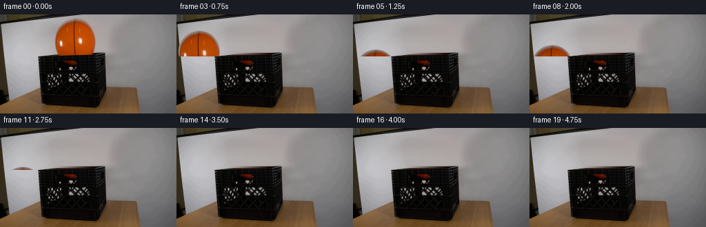
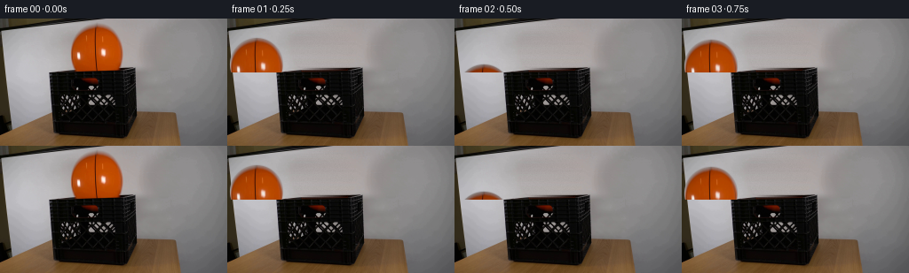
展开代码变化
--- 上一保存版本 +++ 本次保存版本 @@ -0,0 +1,134 @@ +from pathlib import Path + +import cv2 +import numpy as np + +import artifact_io + + +WIDTH = 256 +HEIGHT = 144 +FPS = 4 +FRAME_COUNT = 20 + +BALL_CENTER = np.array([108.5, 35.5], dtype=np.float64) +BALL_RADIUS = 30.0 +CRATE_FLOOR_Y = 95.2 +GRAVITY = 600.0 +RESTITUTION = 0.82 + + +def make_background_plate(frame): + """Remove the ball while preserving the wall, shelf edge, and crate rim.""" + plate = frame.copy() + yy, xx = np.mgrid[0:HEIGHT, 0:WIDTH] + distance = np.hypot(xx - BALL_CENTER[0], yy - BALL_CENTER[1]) + removal = (distance <= BALL_RADIUS + 1.8) & (yy < 61) + + rng = np.random.default_rng(15) + fine_noise = rng.normal(0.0, 1.15, (HEIGHT, WIDTH, 1)) + + for y in range(HEIGHT): + xs = np.flatnonzero(removal[y]) + if xs.size == 0: + continue + x0 = max(0, int(xs[0]) - 3) + x1 = min(WIDTH - 1, int(xs[-1]) + 3) + left = frame[y, max(0, x0 - 2) : x0].mean(axis=0) + right = frame[y, x1 + 1 : min(WIDTH, x1 + 3)].mean(axis=0) + blend = np.linspace(0.0, 1.0, x1 - x0 + 1)[:, None] + fill = left[None, :] * (1.0 - blend) + right[None, :] * blend + fill += fine_noise[y, x0 : x1 + 1] + plate[y, x0 : x1 + 1] = np.clip(fill, 0, 255).astype(np.uint8) + + # The front face already hides the lower part of the ball in frame zero. + plate[61:] = frame[61:] + return plate + + +def make_ball_sprite(frame): + x0, x1 = 76, 142 + y0, y1 = 3, 63 + rgb = frame[y0:y1, x0:x1].copy() + yy, xx = np.mgrid[y0:y1, x0:x1] + distance = np.hypot(xx - BALL_CENTER[0], yy - BALL_CENTER[1]) + alpha = np.clip(BALL_RADIUS + 0.55 - distance, 0.0, 1.0) + return rgb, alpha.astype(np.float32) + + +def bounce_state(time_s): + """Return vertical ball-center position for a damped sequence of floor hits.""" + t_contact = np.sqrt(2.0 * (CRATE_FLOOR_Y - BALL_CENTER[1]) / GRAVITY) + if time_s < t_contact: + return BALL_CENTER[1] + 0.5 * GRAVITY * time_s**2 + + outgoing_speed = RESTITUTION * GRAVITY * t_contact + while True: + next_contact = t_contact + 2.0 * outgoing_speed / GRAVITY + if time_s < next_contact or outgoing_speed < 1.5: + elapsed = time_s - t_contact + y = ( + CRATE_FLOOR_Y + - outgoing_speed * elapsed + + 0.5 * GRAVITY * elapsed**2 + ) + return float(min(CRATE_FLOOR_Y, y)) + t_contact = next_contact + outgoing_speed *= RESTITUTION + + +def render_frame(frame, plate, sprite_rgb, sprite_alpha, frame_index): + if frame_index == 0: + return frame.copy() + + y = bounce_state(frame_index / FPS) + dy = y - BALL_CENTER[1] + transform = np.float32([[1.0, 0.0, 0.0], [0.0, 1.0, dy]]) + + moved_rgb = cv2.warpAffine( + sprite_rgb, + transform, + (WIDTH, HEIGHT), + flags=cv2.INTER_LINEAR, + borderMode=cv2.BORDER_CONSTANT, + borderValue=(0, 0, 0), + ).astype(np.float32) + moved_alpha = cv2.warpAffine( + sprite_alpha, + transform, + (WIDTH, HEIGHT), + flags=cv2.INTER_LINEAR, + borderMode=cv2.BORDER_CONSTANT, + borderValue=0.0, + ) + + # A shallow crate lets less light reach the ball after it descends. + depth = np.clip((y - BALL_CENTER[1]) / 55.0, 0.0, 1.0) + moved_rgb *= 1.0 - 0.16 * depth + + moved_alpha[61:] = 0.0 + alpha = moved_alpha[..., None] + output = plate.astype(np.float32) * (1.0 - alpha) + moved_rgb * alpha + output = np.clip(output, 0, 255).astype(np.uint8) + output[61:] = frame[61:] + return output + + +def main(): + case_dir = Path(__file__).resolve().parent + frame = cv2.cvtColor( + cv2.imread(str(case_dir / "first_frame.png"), cv2.IMREAD_COLOR), + cv2.COLOR_BGR2RGB, + ) + plate = make_background_plate(frame) + sprite_rgb, sprite_alpha = make_ball_sprite(frame) + + frames = [ + render_frame(frame, plate, sprite_rgb, sprite_alpha, index) + for index in range(FRAME_COUNT) + ] + artifact_io.save(np.stack(frames), case_dir) + + +if __name__ == "__main__": + main()
候选 02播放与检查图
点击播放 · 原生 RGB 像素

展开代码变化
代码未变化；重新保存了产物。
候选 03播放与检查图
点击播放 · 原生 RGB 像素

展开代码变化
--- 上一保存版本
+++ 本次保存版本
@@ -48,11 +48,13 @@
def make_ball_sprite(frame):
x0, x1 = 76, 142
- y0, y1 = 3, 63
+ y0, y1 = 3, 60
rgb = frame[y0:y1, x0:x1].copy()
yy, xx = np.mgrid[y0:y1, x0:x1]
distance = np.hypot(xx - BALL_CENTER[0], yy - BALL_CENTER[1])
alpha = np.clip(BALL_RADIUS + 0.55 - distance, 0.0, 1.0)
+ # The front rim begins at row 59 and is always in front of the ball.
+ alpha[yy >= 59] = 0.0
return rgb, alpha.astype(np.float32)
@@ -106,11 +108,11 @@
depth = np.clip((y - BALL_CENTER[1]) / 55.0, 0.0, 1.0)
moved_rgb *= 1.0 - 0.16 * depth
- moved_alpha[61:] = 0.0
+ moved_alpha[59:] = 0.0
alpha = moved_alpha[..., None]
output = plate.astype(np.float32) * (1.0 - alpha) + moved_rgb * alpha
output = np.clip(output, 0, 255).astype(np.uint8)
- output[61:] = frame[61:]
+ output[59:] = frame[59:]
return output
候选 04播放与检查图
点击播放 · 原生 RGB 像素

展开代码变化
代码未变化；重新保存了产物。
可观测工具轨迹
实际执行的命令与返回图片。
命令 1exit 0
/bin/bash -c "pwd && rg --files -g 'prompt.txt' -g 'GENERATION_RULES.md' -g 'first_frame.png' -g '"'!*.pyc'"'"
命令 2exit 0
/bin/bash -c 'cat prompt.txt'
命令 3exit 0
/bin/bash -c 'cat GENERATION_RULES.md'
命令 4exit 0
/bin/bash -c 'ls -la'
命令 5exit 0
/bin/bash -c "python - <<'PY'
from PIL import Image
im=Image.open('first_frame.png')
print(im.size, im.mode)
im.resize((1024,576), Image.Resampling.NEAREST).save('.tmp/first_frame_4x.png')
PY"命令 6exit 0
/bin/bash -c "sed -n '1,240p' artifact_io.py"
命令 7exit 0
/bin/bash -c "sed -n '1,260p' player_template.html"
命令 8exit 0
/bin/bash -c "python - <<'PY' import importlib.util for m in ['numpy','PIL','cv2','scipy','imageio','matplotlib']: print(m, bool(importlib.util.find_spec(m))) PY"
命令 9exit 0
/bin/bash -c "python - <<'PY'
from PIL import Image
im=Image.open('first_frame.png')
im.crop((45,35,170,145)).resize((750,660), Image.Resampling.NEAREST).save('.tmp/crop_crate.png')
PY"命令 10exit 0
/bin/bash -c "python - <<'PY'
import cv2, numpy as np
im=cv2.imread('first_frame.png')
hsv=cv2.cvtColor(im, cv2.COLOR_BGR2HSV)
# print HSV samples and threshold orange
for x,y in [(110,40),(90,50),(135,60),(110,75),(100,80),(60,60),(120,60)]:
print((x,y), im[y,x][::-1], hsv[y,x])
mask=((hsv[:,:,0]>2)&(hsv[:,:,0]<30)&(hsv[:,:,1]>100)&(hsv[:,:,2]>50)).astype(np.uint8)*255
num, labels, stats, cents=cv2.connectedComponentsWithStats(mask)
for i in range(1,num):
x,y,w,h,a=stats[i]
if a>20: print(i, stats[i].tolist(), cents[i].tolist())
cv2.imwrite('.tmp/orange_mask.png',mask)
PY"命令 11exit 0
/bin/bash -c "python - <<'PY'
from PIL import Image
im=Image.open('first_frame.png')
im.crop((70,0,150,85)).resize((640,680), Image.Resampling.NEAREST).save('.tmp/crop_ball.png')
PY"命令 12exit 0
/bin/bash -c "python - <<'PY'
from PIL import Image, ImageDraw, ImageFont
im=Image.open('first_frame.png').resize((1024,576), Image.Resampling.NEAREST)
d=ImageDraw.Draw(im)
for x in range(0,256,10):
X=x*4; d.line((X,0,X,576), fill=(0,255,255), width=1)
if x%20==0:d.text((X+1,1),str(x),fill=(0,255,255))
for y in range(0,144,10):
Y=y*4; d.line((0,Y,1024,Y), fill=(255,0,255), width=1)
if y%20==0:d.text((1,Y+1),str(y),fill=(255,0,255))
im.save('.tmp/grid.png')
PY"命令 13exit 0
/bin/bash -c "python - <<'PY'
import cv2, numpy as np
from PIL import Image
im=cv2.imread('first_frame.png')
h,w=im.shape[:2]
y,x=np.ogrid[:h,:w]
cx,cy,rx,ry=108.5,35.5,29.8,29.8
mask=(((x-cx)/rx)**2+((y-cy)/ry)**2<=1.0).astype(np.uint8)
m=cv2.dilate(mask,np.ones((3,3),np.uint8),iterations=1)
plate=cv2.inpaint(im,m,3,cv2.INPAINT_TELEA)
# directional horizontal interpolation for wall rows
out=plate.copy()
for yy in range(3,57):
xs=np.flatnonzero(mask[yy])
if len(xs)==0: continue
a=max(0,xs.min()-3); b=min(w-1,xs.max()+3)
for ch in range(3):
vals=np.interp(np.arange(a,b+1),[a,b],[im[yy,a,ch],im[yy,b,ch]])
out[yy,a:b+1,ch]=vals
# rim rows: use right-side dark median texture repeated/interpolated
for yy in range(57,66):
xs=np.flatnonzero(mask[yy])
if len(xs)==0: continue
a=max(0,xs.min()-2); b=min(w-1,xs.max()+2)
# interpolate between edges but force crate black from right sample if edges are wall
left=im[yy,max(55,a-1)].astype(float)
right=im[yy,min(154,b+1)].astype(float)
if yy<60:
# black rim exists from x57 to153; fill dark from nearby
sample=im[yy,140:153].mean(axis=0)
else:
sample=im[yy,128:140].mean(axis=0)
out[yy,a:b+1]=sample
cv2.imwrite('.tmp/plate.png',out)
Image.fromarray(cv2.cvtColor(out,cv2.COLOR_BGR2RGB)).resize((1024,576),Image.Resampling.NEAREST).save('.tmp/plate4x.png')
PY"命令 14exit 0
/bin/bash -c "python - <<'PY'
import cv2,numpy as np
im=cv2.imread('first_frame.png')
# print pixels around crate top
for y in range(54,68):
print('y',y)
for x in range(52,62): print(x,tuple(int(v) for v in im[y,x][::-1]),end='; ')
print('\\nright',[(x,tuple(int(v) for v in im[y,x][::-1])) for x in range(149,159)])
PY"命令 15exit 0
/bin/bash -c "python - <<'PY'
import cv2, numpy as np
im=cv2.imread('first_frame.png')
# Sample a black-pixel row by row in front crate region, to see where ball overlaps
for y in range(55,110,5):
a=im[y,55:155].mean(axis=1)
print(y, 'dark xs', [(55+i,round(float(v))) for i,v in enumerate(a) if v<35][:40])
PY"命令 16exit 0
/bin/bash -c "python - <<'PY'
from PIL import Image
im=Image.open('first_frame.png')
im.crop((78,0,141,71)).resize((756,852), Image.Resampling.NEAREST).save('.tmp/ballonly.png')
PY"命令 17exit 0
/bin/bash -c 'python generate.py'
命令 18exit 0
/bin/bash -c "python - <<'PY'
from PIL import Image
import numpy as np
for i in [0,1,2,3,4,5,6,8,10]:
a=np.asarray(Image.open(f'frames/{i:02d}.png'))
# orange-ish count
m=(a[:,:,0]>80)&(a[:,:,0]>a[:,:,1]*1.4)&(a[:,:,0]>a[:,:,2]*2)
ys,xs=np.where(m)
print(i, len(xs), (xs.min(),ys.min(),xs.max(),ys.max()) if len(xs) else None)
PY"命令 19exit 0
/bin/bash -c "python - <<'PY'
from PIL import Image, ImageDraw
frames=[Image.open(f'frames/{i:02d}.png') for i in [0,1,2,3,4,5,6,8,10,12]]
out=Image.new('RGB',(512,5*144+5*20),(20,20,20));d=ImageDraw.Draw(out)
for j,im in enumerate(frames):
x=(j%2)*256;y=(j//2)*164
out.paste(im,(x,y+20));d.text((x+4,y+3),f'frame {[0,1,2,3,4,5,6,8,10,12][j]}',fill='white')
out.resize((1024,1640),Image.Resampling.NEAREST).save('.tmp/contact_sheet.png')
PY"命令 20exit 0
/bin/bash -c "python - <<'PY'
import cv2, numpy as np
im=cv2.imread('first_frame.png')
# inspect horizontal color profile at rows near ball bottom/rim
for y in [56,57,58,59,60,61,62,63,64,65,66,67,68]:
row=im[y,70:150,::-1]
# classify wall/dark/orange
orange=((row[:,0]>80)&(row[:,0]>row[:,1]*1.4)).sum()
dark=(row.mean(axis=1)<40).sum()
wall=(row.mean(axis=1)>100).sum()
print(y,'orange',orange,'dark',dark,'wall',wall)
PY"命令 21exit 0
/bin/bash -c "python - <<'PY'
import cv2, numpy as np
im=cv2.imread('first_frame.png')
# patch original over moved ball at rim y=55..67 to see cleaner sprite
# Save sprite and wall plate for inspect
PY"命令 22exit 0
/bin/bash -c "python - <<'PY'
import cv2,numpy as np
im=cv2.imread('first_frame.png')
# enlarged side-by-side pixels around rim row 58-72 x80-140
crop=im[52:82,75:145]
cv2.imwrite('.tmp/rim_orig.png',cv2.resize(crop,None,fx=10,fy=10,interpolation=cv2.INTER_NEAREST))
PY"命令 23exit 0
/bin/bash -c "python - <<'PY'
import cv2,numpy as np
im=cv2.imread('first_frame.png')
# median texture strips from unobscured top rim
for y in range(55,70):
vals=[]
for x in list(range(57,76))+list(range(142,153)):
v=im[y,x].mean()
vals.append(round(float(v)))
print(y, vals)
PY"命令 24exit 0
/bin/bash -c "python - <<'PY'
from PIL import Image
for i in [1,2,3,4,5,6,10,19]:
Image.open(f'frames/{i:02d}.png').resize((1024,576),Image.Resampling.NEAREST).save(f'.tmp/frame{i:02d}_4x.png')
PY"命令 25exit 0
/bin/bash -c "python - <<'PY' import generate for i in range(20): y=generate.bounce_state(i/4) print(i, i/4, round(y,2), 'top',round(y-30,1),'bottom',round(y+30,1)) PY"
命令 26exit 0
/bin/bash -c "python - <<'PY'
import cv2,numpy as np
im=cv2.imread('first_frame.png')
# Determine ball circle boundary via orange mask around candidate center/radius and compare alpha edge
hsv=cv2.cvtColor(im,cv2.COLOR_BGR2HSV)
m=(hsv[:,:,0]<25)&(hsv[:,:,1]>120)&(hsv[:,:,2]>60)
y,x=np.where(m)
# filter ball region x 70:145 y<61
sel=(x>70)&(x<145)&(y<61)
x=x[sel];y=y[sel]
print('bounds',x.min(),x.max(),y.min(),y.max(),'cent',x.mean(),y.mean())
# each row extents
for yy in range(7,60,4):
xs=x[y==yy]
print(yy, (xs.min(),xs.max()) if len(xs) else None)
PY"命令 27exit 0
/bin/bash -c "python - <<'PY'
from PIL import Image
im=Image.open('frames/02.png')
im.crop((75,50,145,70)).resize((1120,320),Image.Resampling.NEAREST).save('.tmp/f2_rim.png')
PY"命令 28exit 0
/bin/bash -c "python - <<'PY'
from PIL import Image
im=Image.open('frames/02.png')
im.crop((75,50,145,66)).resize((1120,256),Image.Resampling.NEAREST).save('.tmp/f2_rim.png')
PY"命令 29exit 0
/bin/bash -c "python - <<'PY'
import numpy as np
for e in [.55,.62,.68,.72]:
G=600; y0=35.5; floor=95.2; tc=np.sqrt(2*(floor-y0)/G); print('e',e,'contact',tc)
for i in range(20):
t=i/4
if t<tc:y=y0+.5*G*t*t
else:
tc2=tc; v=e*G*tc
while True:
nt=tc2+2*v/G
if t<nt or v<1.5:
el=t-tc2;y=min(floor,floor-v*el+.5*G*el*el);break
tc2=nt;v*=e
if i<10: print(i,round(y,1),round(y-30,1))
print()
PY"命令 30exit 0
/bin/bash -c "python - <<'PY'
import cv2,numpy as np
im=cv2.imread('first_frame.png')
# connected color components in region x55:154 y55:110; inspect mean colors of components
roi=im[55:110,55:154]
# quantize kmeans maybe print histogram means
pix=roi.reshape(-1,3)
for thr in [20,30,40,50]:
m=pix.mean(axis=1)<thr
print(thr,m.sum())
# detect edges
ed=cv2.Canny(im,50,120)
cv2.imwrite('.tmp/edges.png',ed)
PY"命令 31exit 0
/bin/bash -c "python generate.py && python - <<'PY'
from PIL import Image
for i in [1,2,3,4,5,6]:
Image.open(f'frames/{i:02d}.png').resize((1024,576),Image.Resampling.NEAREST).save(f'.tmp/frame{i:02d}_4x.png')
PY"命令 32exit 0
/bin/bash -c "python - <<'PY'
import numpy as np,cv2
from PIL import Image
im=np.array(Image.open('first_frame.png'))
# map ball pixels by row to compare hue saturation, and analyze background plate generation visually
# save current plate
import generate
frame=im
plate=generate.make_background_plate(frame)
Image.fromarray(plate).resize((1024,576),Image.Resampling.NEAREST).save('.tmp/plate_current.png')
PY"命令 33exit 0
/bin/bash -c "python - <<'PY'
from pathlib import Path
import numpy as np
from PIL import Image
import artifact_io
src=np.asarray(Image.open('first_frame.png').convert('RGB'))
f0=np.asarray(Image.open('frames/00.png').convert('RGB'))
print('frame0 identical:', np.array_equal(src,f0), 'maxdiff:', np.abs(src.astype(int)-f0.astype(int)).max())
arr=np.stack([np.asarray(Image.open(f'frames/{i:02d}.png').convert('RGB')) for i in range(20)])
print('shape/dtype:', arr.shape, arr.dtype)
print('changed pixels from frame0:', [int(np.any(arr[i]"'!=arr[0],axis=2).sum()) for i in range(20)])
print('"'frame-to-frame changed:', [int(np.any(arr[i]"'!=arr[i-1],axis=2).sum()) for i in range(1,20)])
PY'命令 34exit 0
/bin/bash -c "python - <<'PY'
import cv2, numpy as np
im=cv2.imread('first_frame.png')
# bounding box dark rim row widths to understand top plane.
for y in range(58,72):
xs=np.flatnonzero(im[y,:,:].mean(axis=1)<45)
if len(xs): print(y,xs.min(),xs.max(),len(xs))
PY"命令 35exit 0
/bin/bash -c "python - <<'PY'
import numpy as np
from PIL import Image
# locate actual topmost dark pixel in crate x55:155 for each y
im=np.array(Image.open('first_frame.png'))
for y in range(55,64):
m=im[y,:,].mean(1)<45
xs=np.where(m[50:160])[0]+50
print(y, list(xs[:10]), list(xs[-10:]))
PY"命令 36exit 0
/bin/bash -c 'git status --short 2>/dev/null || true'
命令 37exit 0
/bin/bash -c "python - <<'PY'
from pathlib import Path
import numpy as np
p=Path('pixels.npz')
with np.load(p) as z:
print('pixels', z['pixels'].shape, z['pixels'].dtype)
print('index.html', Path('index.html').stat().st_size)
print('frames', len(list(Path('frames').glob('*.png'))))
PY"命令 38exit 0
/bin/bash -c "python - <<'PY'
import numpy as np
from PIL import Image
# print average RGB in local regions of frame 2 and frame 0 to inspect exposure
for i in [0,1,2,3,4,5,6]:
a=np.array(Image.open(f'frames/{i:02d}.png'))
reg=a[10:40,95:125]
print(i, reg.mean((0,1)).round(1), 'minmax',reg.min(),reg.max())
PY"命令 39exit 0
/bin/bash -c "python - <<'PY'
import cv2,numpy as np
im=cv2.imread('first_frame.png')
for x in [75,77,79,81,83,85,90,100,108,116,130,134,136,138,140,142]:
print(x, [tuple(int(v) for v in im[y,x][::-1]) for y in range(57,63)])
PY"命令 40exit 0
/bin/bash -c "python - <<'PY'
import numpy as np,cv2
from PIL import Image
im=cv2.imread('first_frame.png')
# candidate sprite: crop up through row58, no alpha clipping except circle, compare original recomposition
import generate
rgb,a=generate.make_ball_sprite(cv2.cvtColor(im,cv2.COLOR_BGR2RGB))
# save alpha image
Image.fromarray((a*255).astype('uint8')).resize((660,570),Image.Resampling.NEAREST).save('.tmp/alpha.png')
PY"视觉工具实际返回图片 1
视觉工具实际返回图片 2
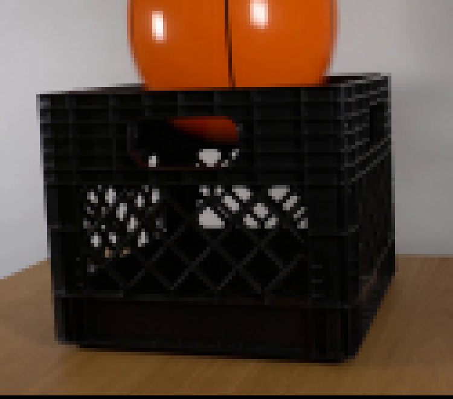
视觉工具实际返回图片 3
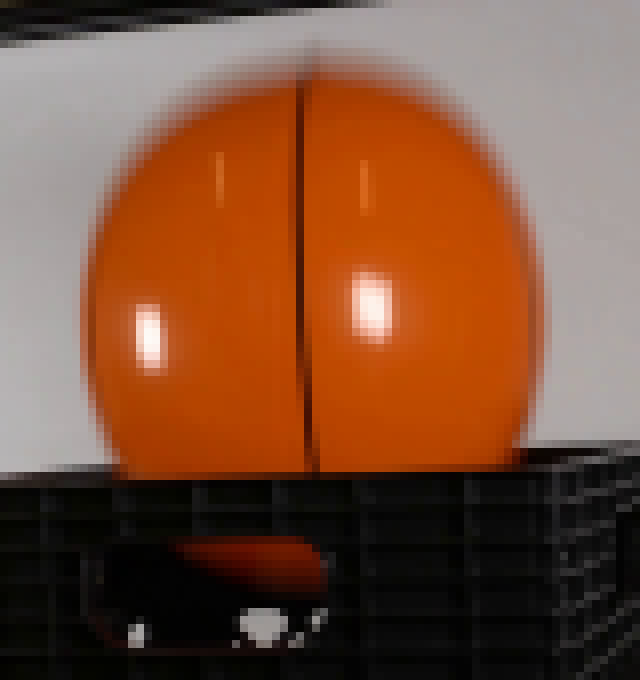
视觉工具实际返回图片 4
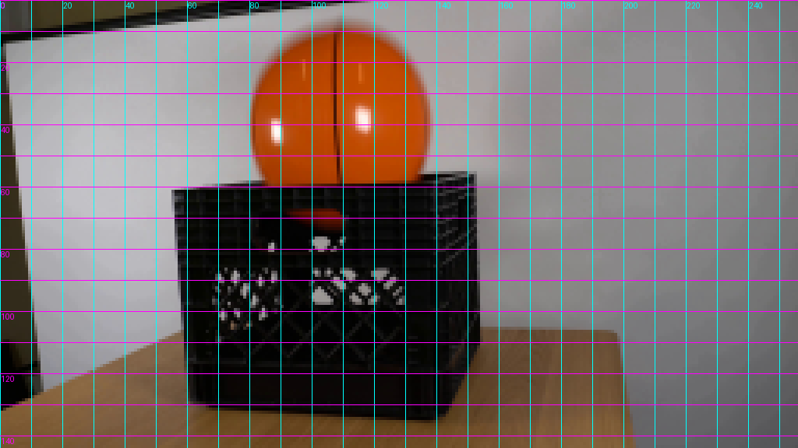
视觉工具实际返回图片 5
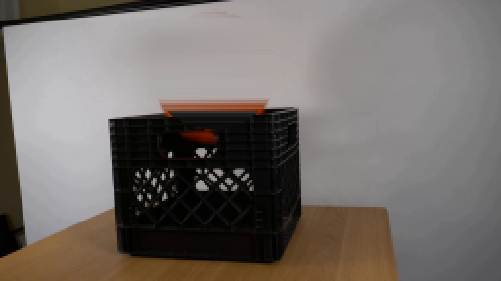
视觉工具实际返回图片 6
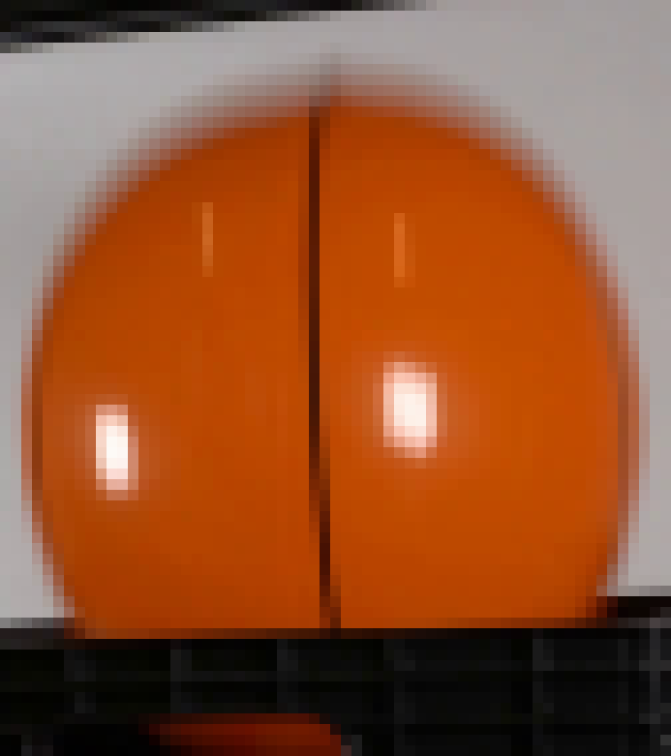
视觉工具实际返回图片 7

视觉工具实际返回图片 8
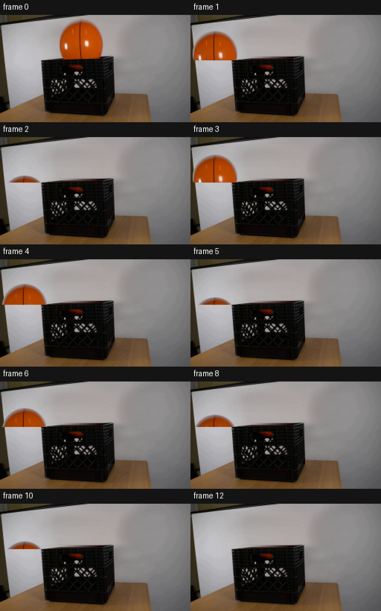
视觉工具实际返回图片 9
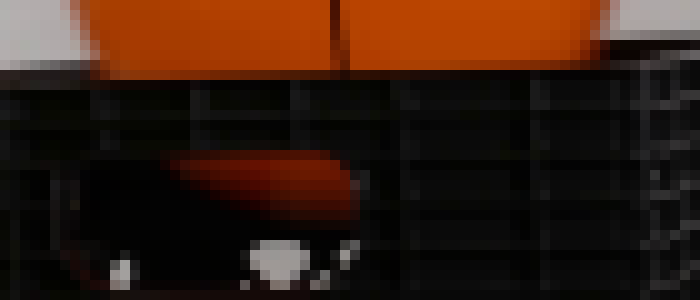
视觉工具实际返回图片 10
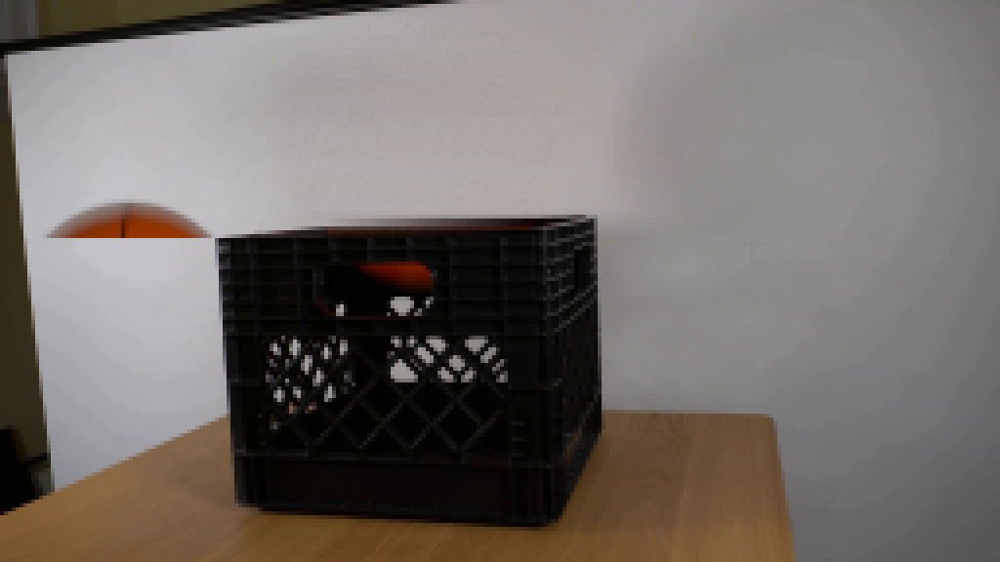
视觉工具实际返回图片 11
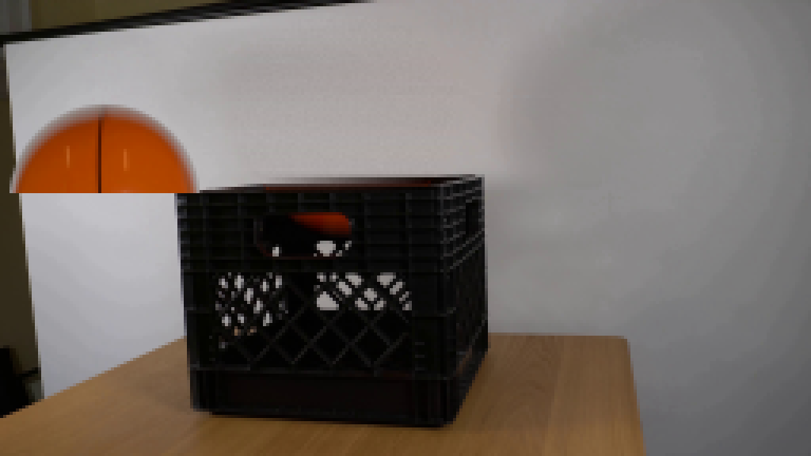
视觉工具实际返回图片 12
视觉工具实际返回图片 13
视觉工具实际返回图片 14
视觉工具实际返回图片 15
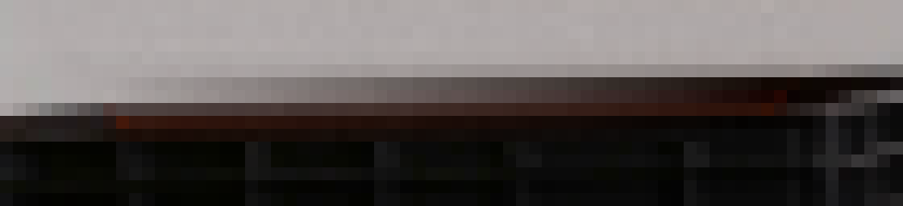
视觉工具实际返回图片 16
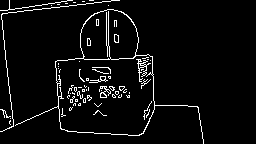
视觉工具实际返回图片 17
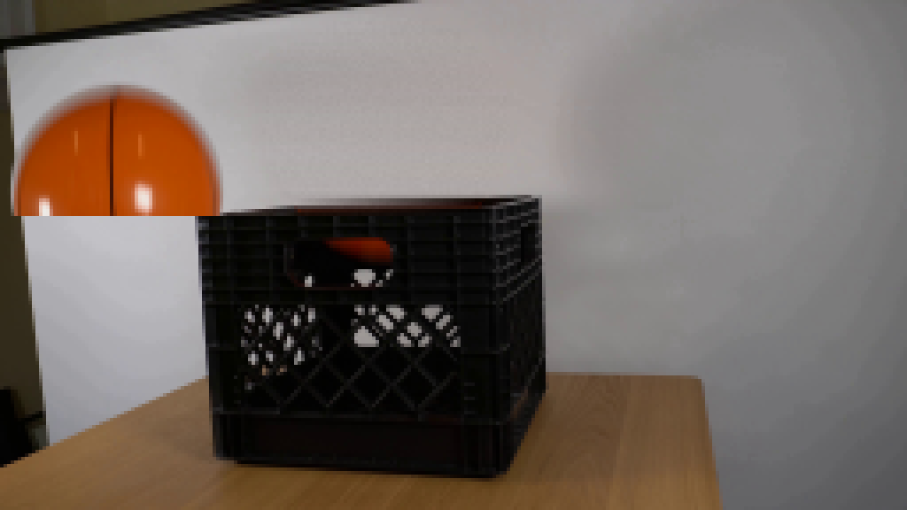
视觉工具实际返回图片 18
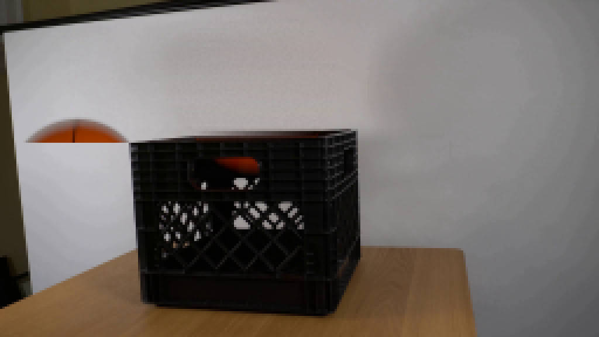
视觉工具实际返回图片 19
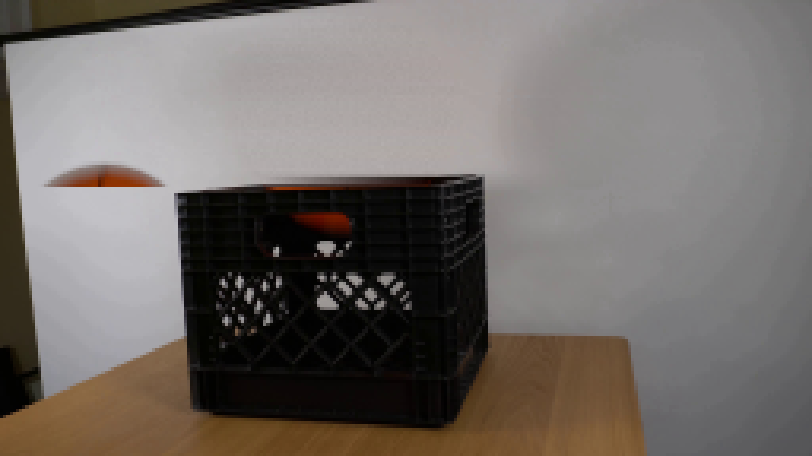
视觉工具实际返回图片 20
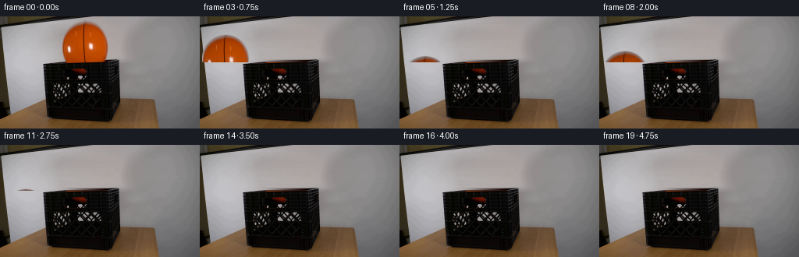
视觉工具实际返回图片 21
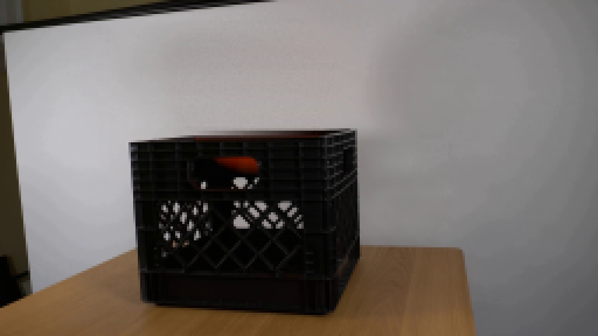
视觉工具实际返回图片 22
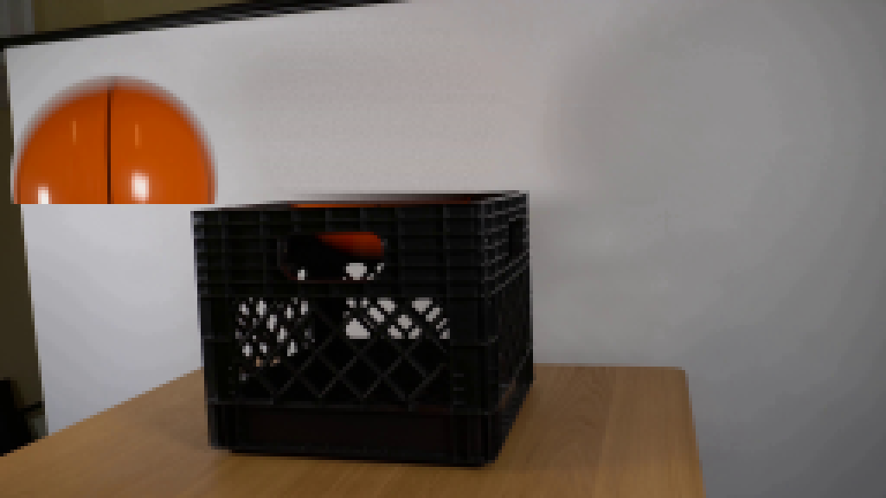
视觉工具实际返回图片 23
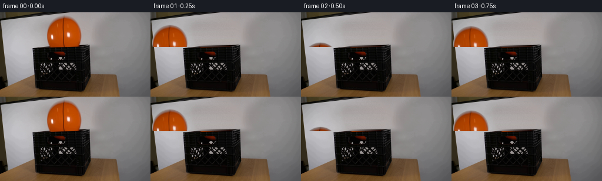
视觉工具实际返回图片 24
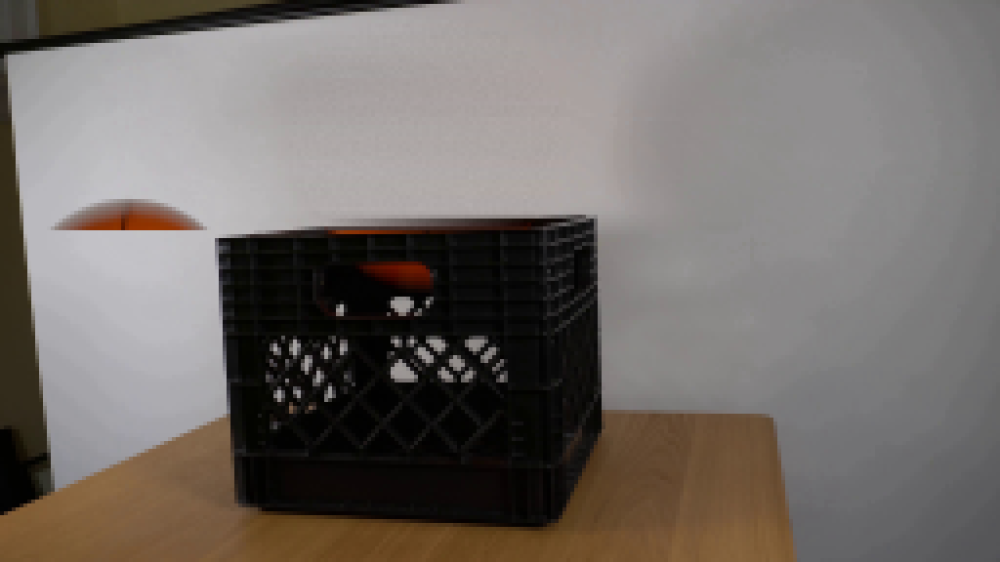
视觉工具实际返回图片 25
视觉工具实际返回图片 26
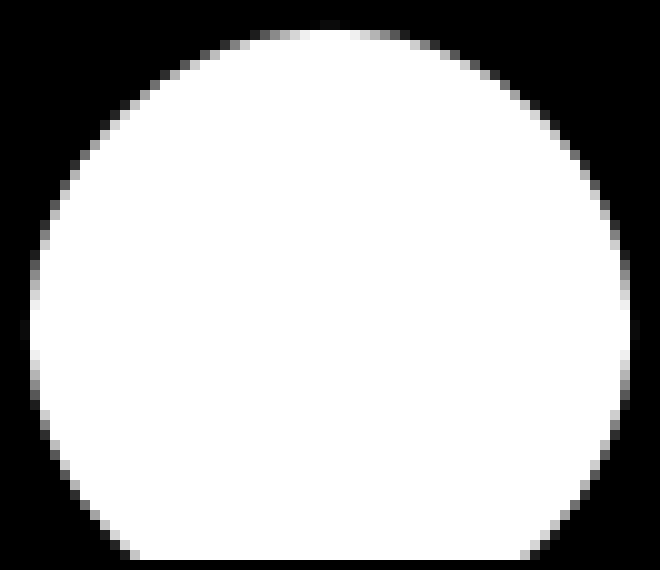
保存候选 4 份；完成命令 40 次；可验证图片返回 26 张。原始 API 响应与完整日志保留在本地。